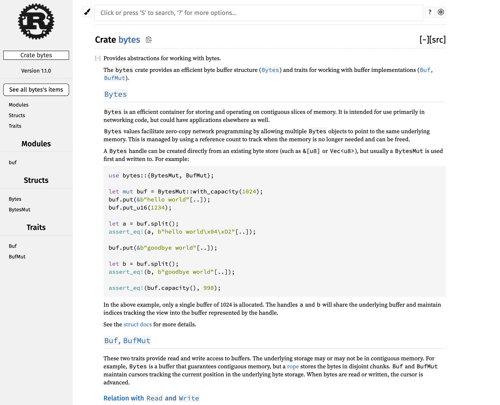
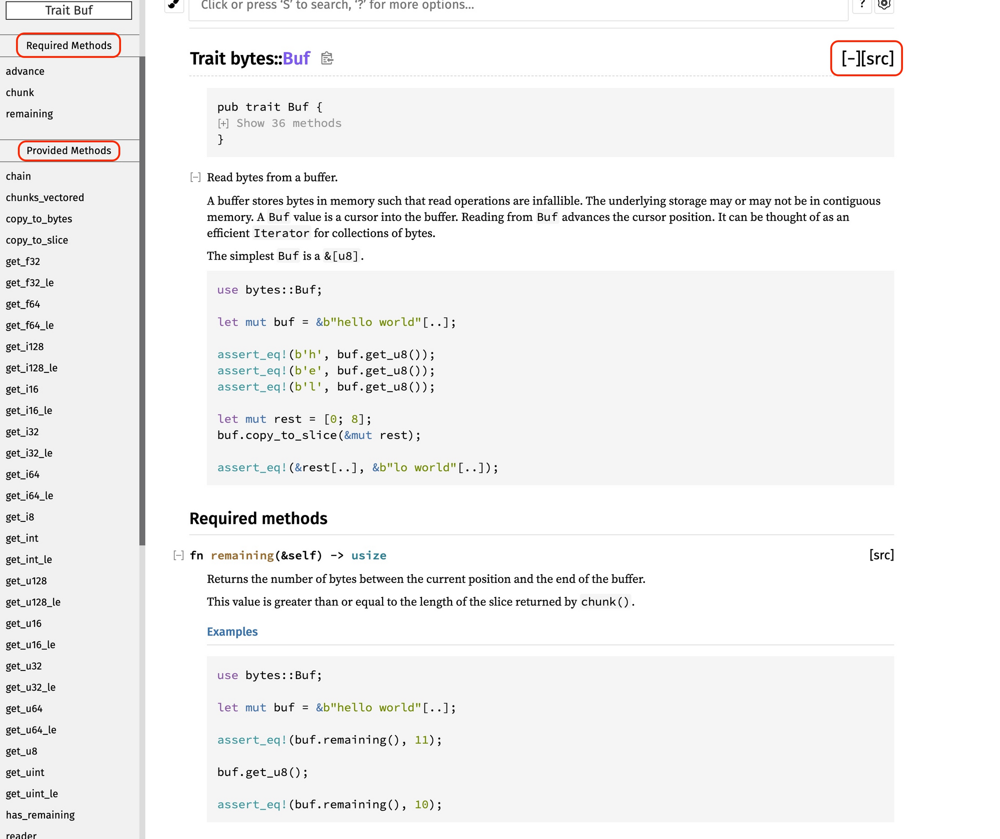
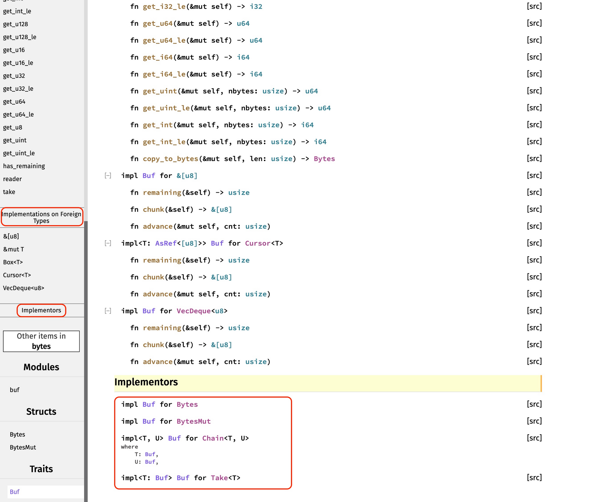
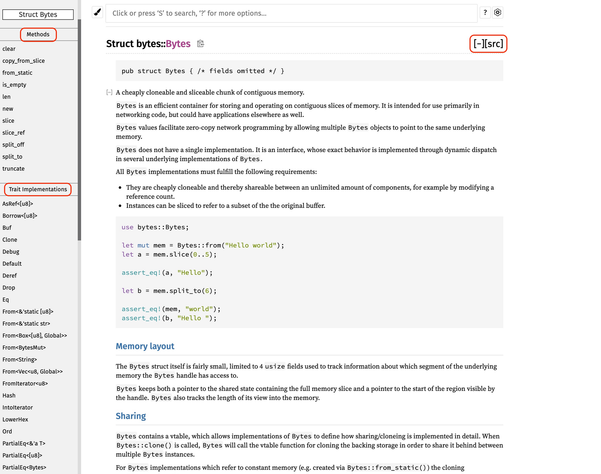
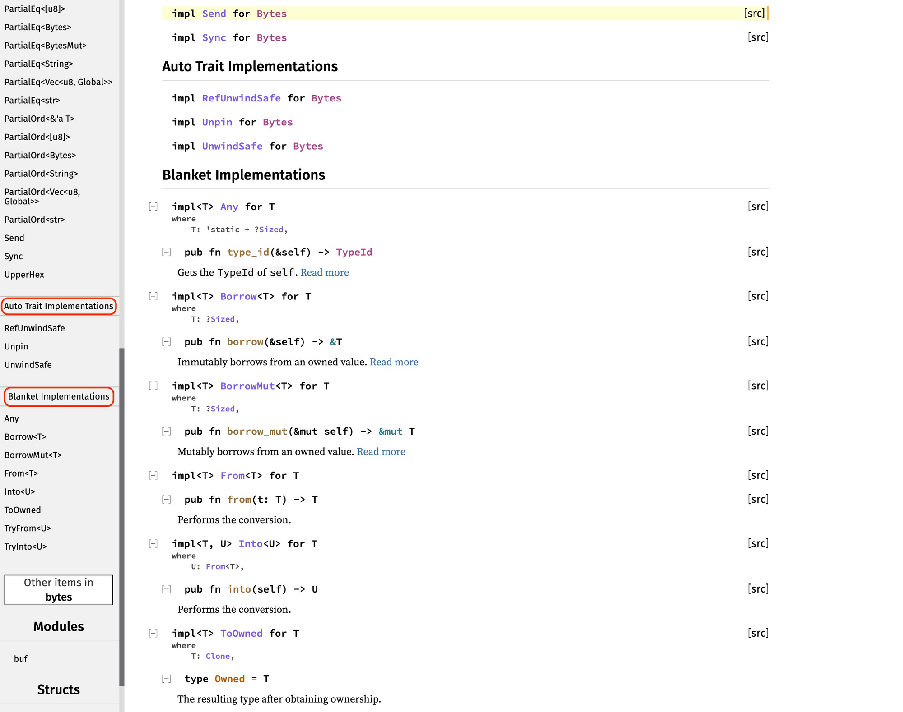
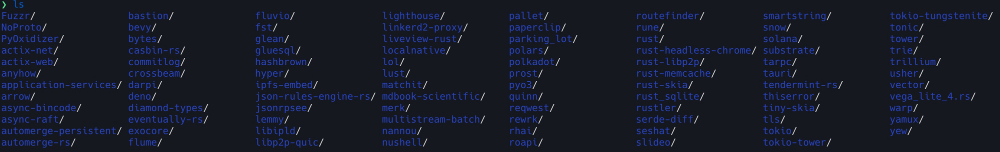

- 00 开篇词 让Rust成为你的下一门主力语言.md.html
- 01 内存：值放堆上还是放栈上，这是一个问题.md.html
- 02 串讲：编程开发中，那些你需要掌握的基本概念.md.html
- 03 初窥门径：从你的第一个Rust程序开始！.md.html
- 04 get hands dirty：来写个实用的CLI小工具.md.html
- 05 get hands dirty：做一个图片服务器有多难？.md.html
- 06 get hands dirty：SQL查询工具怎么一鱼多吃？.md.html
- 07 所有权：值的生杀大权到底在谁手上？.md.html
- 08 所有权：值的借用是如何工作的？.md.html
- 09 所有权：一个值可以有多个所有者么？.md.html
- 10 生命周期：你创建的值究竟能活多久？.md.html
- 11 内存管理：从创建到消亡，值都经历了什么？.md.html
- 12 类型系统：Rust的类型系统有什么特点？.md.html
- 13 类型系统：如何使用trait来定义接口？.md.html
- 14 类型系统：有哪些必须掌握的trait？.md.html
- 15 数据结构：这些浓眉大眼的结构竟然都是智能指针？.md.html
- 16 数据结构：Vec_T_、&[T]、Box_[T]_ ，你真的了解集合容器么？.md.html
- 17 数据结构：软件系统核心部件哈希表，内存如何布局？.md.html
- 18 错误处理：为什么Rust的错误处理与众不同？.md.html
- 19 闭包：FnOnce、FnMut和Fn，为什么有这么多类型？.md.html
- 20 4 Steps ：如何更好地阅读Rust源码？.md.html
- 21 阶段实操（1）：构建一个简单的KV server-基本流程.md.html
- 22 阶段实操（2）：构建一个简单的KV server-基本流程.md.html
- 23 类型系统：如何在实战中使用泛型编程？.md.html
- 24 类型系统：如何在实战中使用trait object？.md.html
- 25 类型系统：如何围绕trait来设计和架构系统？.md.html
- 26 阶段实操（3）：构建一个简单的KV server-高级trait技巧.md.html
- 27 生态系统：有哪些常有的Rust库可以为我所用？.md.html
- 28 网络开发（上）：如何使用Rust处理网络请求？.md.html
- 29 网络开发（下）：如何使用Rust处理网络请求？.md.html
- 30 Unsafe Rust：如何用C++的方式打开Rust？.md.html
- 31 FFI：Rust如何和你的语言架起沟通桥梁？.md.html
- 32 实操项目：使用PyO3开发Python3模块.md.html
- 33 并发处理（上）：从atomics到Channel，Rust都提供了什么工具？.md.html
- 34 并发处理（下）：从atomics到Channel，Rust都提供了什么工具？.md.html
- 35 实操项目：如何实现一个基本的MPSC channel？.md.html
- 36 阶段实操（4）：构建一个简单的KV server-网络处理.md.html
- 37 阶段实操（5）：构建一个简单的KV server-网络安全.md.html
- 38 异步处理：Future是什么？它和async_await是什么关系？.md.html
- 39 异步处理：async_await内部是怎么实现的？.md.html
- 40 异步处理：如何处理异步IO？.md.html
- 41 阶段实操（6）：构建一个简单的KV server-异步处理.md.html
- 42 阶段实操（7）：构建一个简单的KV server-如何做大的重构？.md.html
- 43 生产环境：真实世界下的一个Rust项目包含哪些要素？.md.html
- 44 数据处理：应用程序和数据如何打交道？.md.html
- 45 阶段实操（8）：构建一个简单的KV server-配置_测试_监控_CI_CD.md.html
- 46 软件架构：如何用Rust架构复杂系统？.md.html
- 加餐 Rust2021版次问世了！.md.html
- 加餐 代码即数据：为什么我们需要宏编程能力？.md.html
- 加餐 宏编程（上）：用最“笨”的方式撰写宏.md.html
- 加餐 宏编程（下）：用 syn_quote 优雅地构建宏.md.html
- 加餐 愚昧之巅：你的Rust学习常见问题汇总.md.html
- 加餐 期中测试：参考实现讲解.md.html
- 加餐 期中测试：来写一个简单的grep命令行.md.html
- 加餐 这个专栏你可以怎么学，以及Rust是否值得学？.md.html
- 大咖助场 开悟之坡（上）：Rust的现状、机遇与挑战.md.html
- 大咖助场 开悟之坡（下）：Rust的现状、机遇与挑战.md.html
- 特别策划 学习锦囊（一）：听听课代表们怎么说.md.html
- 特别策划 学习锦囊（三）：听听课代表们怎么说.md.html
- 特别策划 学习锦囊（二）：听听课代表们怎么说.md.html
- 用户故事 绝望之谷：改变从学习开始.md.html
- 用户故事 语言不仅是工具，还是思维方式.md.html
- 结束语 永续之原：Rust学习，如何持续精进？.md.html
- 捐赠
20 4 Steps ：如何更好地阅读Rust源码？
你好，我是陈天。
到目前为止，Rust 的基础知识我们就学得差不多了。这倒不是说已经像用筛子一样，把基础知识仔细筛了一遍，毕竟我只能给你提供学习Rust的思路，扫清入门障碍。老话说得好，师傅领进门修行靠个人，在 Rust 世界里打怪升级，还要靠你自己去探索、去努力。
虽然不能帮你打怪，但是打怪的基本技巧可以聊一聊。所以在开始阶段实操引入大量新第三方库之前，我们非常有必要先聊一下这个很重要的技巧：如何更好地阅读源码。
其实会读源码是个终生受益的开发技能，却往往被忽略。在我读过的绝大多数的编程书籍里，很少有讲如何阅读代码的，就像世间的书籍千千万万，“如何阅读一本书”这样的题材却凤毛麟角。
当然，在解决“如何”之前，我们要先搞明白“为什么”。
为什么要阅读源码？
如果课程的每一讲你都认真看过，会发现时刻都在引用标准库的源码，让我们在阅读的时候，不光学基础知识，还能围绕它的第一手资料也就是源代码展开讨论。
如果说他人总结的知识是果实，那源代码就是结出这果实的种子。只摘果子吃，就是等他人赏饭，非常被动，也不容易分清果子的好坏；如果靠朴素的源码种子结出了自己的果实，确实前期要耐得住寂寞施肥浇水，但收割的时刻，一切尽在自己的掌控之中。
作为开发者，我们每天都和代码打交道。经过数年的基础教育和职业培训，我们都会“写”代码，或者至少会抄代码和改代码。但是，会读代码的其实并不多，会读代码又真正能读懂一些大项目源码的，少之又少。
这种怪状，真要追究起来，就是因为前期我们所有的教育和培训都在强调怎么写代码，并没有教怎么读代码，而走入工作后，大多数场景也都是一个萝卜一个坑，我们只需要了解系统的一个局部就能开展工作，读和工作内容不相干的代码，似乎没什么用。
那没有读过大量代码究竟有什么问题，毕竟工作好像还是能正常开展？就拿跟写代码有很多相通之处的写作来对比。
小时候我们都经历过读课文、背课文、写作文的过程。除了学习语法和文法知识外，从小学开始，经年累月，阅读各种名家作品，经过各种写作训练，才累积出自己的写作能力。所以可以说，写作建立在大量阅读基础上。
而我们写代码的过程就很不同了，在学会基础的语法和试验了若干 example 后，跳过了大量阅读名家作品的阶段，直接坐火箭般蹿到自己开始写业务代码。
这样跳过了大量的代码阅读有三个问题：
首先没有足够积累，我们很容易养成 StackOverflow driven 的写代码习惯。
遇到不知如何写的代码，从网上找现成的答案，找个高票的复制粘贴，改一改凑活着用，先完成功能再说。写代码的过程中遇到问题，就开启调试模式，要么设置无数断点一步步跟踪，要么到处打印信息试图为满是窟窿的代码打上补丁，导致写代码的整个过程就是一部调代码的血泪史。
其次，因为平时基础不牢靠，我们靠边写边学的进步是最慢的。道理很简单，前辈们踩过坑总结的经验教训，都不得不亲自用最慢的法子一点点试着踩一遍。
最后还有一个非常容易被忽略的天花板问题，周围能触达的那个最强工程师开发水平的上限，就是我们的上限。
但是如果重视读源码平时积累，并且具备一定阅读技巧，这三个问题就能迎刃而解。就像写作文形容美女时，你立即能想到“肌肤胜雪、明眸善睐、齿如含贝、气若幽兰……”，而不是憋了半天就三字“哇美女”。为了让我们在写代码的时候，摆脱只会“哇美女”这样的初级阶段，多读源码非常关键。
三大功用
读源码的第一个好处是，知识的源头在你这里，你可以根据事实来分辨是非，而不是迷信权威。比如说之前讲 Rc 时（[第9讲]），我们通过源码引出 Box::leak ，回答了为啥 Rc 可以突破 Rust 单一所有权的桎梏；谈到 FnOnce 时（[第19讲]），通过源码一眼看透为啥 FnOnce 只能调用一次。
未来你在跟别人分享的时候，可以很自信地回答这些问题，而不必说因为《陈天的 Rust 第一课》里是这么说的，这也解决了刚才的第一个问题。
通过源码我们还学到了很多技巧。比如 Rc::clone() 如何使用内部可变性来保持 Clone trait 的不可变约束（[第9讲]）；Iterator 里的方法如何通过不断构造新的 Iterator 数据结构，来支持 lazy evaluation （[第16讲]）。
未来你在写代码时，这些技巧都可以使用，从“哇美女”的初级水平到可以试着使用“一笑倾城，再笑倾国”的地步。这是读源码的第二个好处，看别人的代码，积累了素材，开拓了思路，自己写代码时可以“文思如泉涌，下笔如有神”。
最后一个能解决的问题就是打破天花板了。累积素材是基础，被启发出来的思路将这些素材串成线，才形成了自己的知识。
优秀的代码读得越多，越能引发思考，从而引发更多的阅读，形成一个飞轮效应，让自己的知识变得越来越丰富。而知识的融会贯通，最终形成读代码的第三大功用：通过了解、吸收别人的思想，去芜存菁，最终形成自己的思想或者说智慧。
当然从素材、到知识、再到智慧，要长期积累，并非一朝一夕之功。搞明白“为什么”给到我们的三个学习方向，所以现在来进一步解决“如何”，分享一下我的方法论，为你的积累助助力。
如何阅读源码呢？
我们以第三方库 Bytes 为例，来看看如何阅读源码。希望你跟着今天的节奏走，不管是否关心 bytes 的实现，都先以它为蓝本，把基本方法熟悉一遍，再扩展到更多代码的阅读，比如 hyper、nom、tokio、tonic 等。
Bytes 是 tokio 下一个高效处理网络数据的库，代码本身 3.5k LoC（不包括 2.1k LoC 注释），加上测试 5.3k。代码结构非常简单：
❯ tree src
src
├── buf
│ ├── buf_impl.rs
│ ├── buf_mut.rs
│ ├── chain.rs
│ ├── iter.rs
│ ├── limit.rs
│ ├── mod.rs
│ ├── reader.rs
│ ├── take.rs
│ ├── uninit_slice.rs
│ ├── vec_deque.rs
│ └── writer.rs
├── bytes.rs
├── bytes_mut.rs
├── fmt
│ ├── debug.rs
│ ├── hex.rs
│ └── mod.rs
├── lib.rs
├── loom.rs
└── serde.rs
能看到，脉络很清晰，是很容易阅读的代码。
先简单讲一下读 Rust 代码的顺序：从 crate 的大纲开始，先了解目标代码能干什么、怎么用；然后学习核心 trait，看看它支持哪些功能；之后再掌握主要的数据结构，开始写一些示例代码；最后围绕自己感兴趣的情景深入阅读。
至于为什么这么读，我们边读边具体说明。
step1：从大纲开始
我们先从文档的大纲入手。Rust 的文档系统是所有编程语言中处在第一梯队的，即便不是最好的，也是最好之一。它的文档和代码结合地很紧密，可以来回跳转。
Rust 几乎所有库的文档都在 docs.rs 下，比如 Bytes 的文档可以通过 docs.rs/bytes 访问：- 
首先阅读 crate 的文档，这样可以快速了解这个 crate 是做什么的，就像阅读一本书的时候，可以从书的序和前言入手了解梗概。除此之外，我们还可以看一下源码根目录下的 README.md.html，作为补充资料。
有了大致了解后，你就可以深入了解自己感兴趣的内容。我们就按照初学的顺序来看。
对于 Bytes，我们看到它有两个 trait Buf/BufMut 以及两个数据结构 Bytes/BytesMut，没有 crate 级别的函数。接下来就是深入阅读代码了。
我看的顺序一般是：trait → struct → 函数/方法。因为这和我们写代码的思考方式非常类似：
- 先从需求的流程中敲定系统的行为，需要定义什么接口 trait；
- 再考虑系统有什么状态，定义了哪些数据结构struct；
- 最后到实现细节，包括如何为数据结构实现 trait、数据结构自身有什么算法、如何把整个流程串起来等等。
step2：熟悉核心 trait 的行为
所以先看trait，我们以 Buf trait 为例。点进去看文档，主页面给了这个 trait 的定义和一个使用示例。- 
注意左侧导航栏的 “required Methods” 和 “Provided Methods”，前者是实现这个 trait 需要实现的方法，后者是缺省方法。也就是说数据结构只要实现了这个 trait 的三个方法：advance()、chunk() 和 remaining()，就可以自动实现所有的缺省方法。当然，你也可以重载某个缺省方法。
导航栏继续往下拉，可以看到 bytes 为哪些 “foreign types” 实现了 Buf trait，以及当前模块有哪些 implementors。这些信息很重要，说明了这个 trait 的生态：- 
对于其它数据类型（foreign type）：
- 切片 &[u8]、VecDeque
都实现了 Buf trait； - 如果 T 满足 Buf trait，那么 &mut T、Box
也实现了 Buf trait； - 如果 T 实现了 AsRef<[u8]>，那 Cursor
也实现了 Buf trait。
所以回过头来，上一幅图文档给到的示例，一个 &[u8] 可以使用 Buf trait 里的方法就顺理成章了：
use bytes::Buf;
let mut buf = &b"hello world"[..];
assert_eq!(b'h', buf.get_u8());
assert_eq!(b'e', buf.get_u8());
assert_eq!(b'l', buf.get_u8());
let mut rest = [0; 8];
buf.copy_to_slice(&mut rest);
assert_eq!(&rest[..], &b"lo world"[..]);
而且也知道了，如果未来为自己的数据结构 T 实现 Buf trait，那么我们无需为 Box
看到这里，我们目前还没有深入源码，但已经可以学习到高手定义 trait 的一些思路：
- 定义好 trait 后，可以考虑一下标准库的数据结构，哪些可以实现这个 trait。
- 如果未来别人的某个类型 T ，实现了你的 trait，那他的 &T、&mut T、Box
等衍生类型，是否能够自动实现这个 trait 。
好，接着看左侧导航栏中的 “implementors”，Bytes、BytesMut、Chain、Take 都实现了 Buf trait，这样我们知道了在这个 crate 里，哪些数据结构实现了这个 trait，之后遇到它们就知道都能用来做什么了。
现在，对 Buf trait 以及围绕着它的生态，我们已经有了一个基本的认识，后面你可以从几个方向深入学习：
你甚至不用 clone bytes 的源码，在 docs.rs 里就可以直接完成这些代码的阅读，非常方便。
step3：掌握主要的struct
扫完 trait 的基本功能后，我们再来看数据结构。以 Bytes 这个结构为例：- 
一般来说，好的文档会给出数据结构的介绍、用法、使用时的注意事项，以及一些代码示例。了解了数据结构的基本介绍后，继续看看它的内部结构：
/// ```text
///
/// Arc ptrs +---------+
/// ________________________/| Bytes 2 |
/// / +---------+
/// / +-----------+ | |
/// |_________/ | Bytes 1 | | |
/// | +-----------+ | |
/// | | | ___/ data | tail
/// | data | tail |/ |
/// v v v v
/// +-----+---------------------------------+-----+
/// | Arc | | | | |
/// +-----+---------------------------------+-----+
/// ```
pub struct Bytes {
ptr: *const u8,
len: usize,
// inlined "trait object"
data: AtomicPtr<()>,
vtable: &'static Vtable,
}
pub(crate) struct Vtable {
/// fn(data, ptr, len)
pub clone: unsafe fn(&AtomicPtr<()>, *const u8, usize) -> Bytes,
/// fn(data, ptr, len)
pub drop: unsafe fn(&mut AtomicPtr<()>, *const u8, usize),
}
数据结构的代码往往会有一些注释，帮助你理解它的设计。对于 Bytes 来说，顺着代码往下看：
- 它内部使用了裸指针和长度，模拟一个切片，指向内存中的一片连续地址；
- 同时，还使用了 AtomicPtr 和手工打造的 Vtable 来模拟了 trait object 的行为。
- 看 Vtable 的样子，大概可以推断出 Bytes 的 clone() 和 drop() 的行为是动态的，这是个很有意思的发现。
不过先不忙继续探索它如何实现这个行为的，继续看文档。
和 trait 类似的，在左侧的导航栏，有一些值得关注的信息（上图+下图）：这个数据结构有哪些方法（Methods）、实现了哪些 trait（Trait implementations），以及 Auto trait/Blanket trait 的实现。- 
可以看到，Bytes 除了实现了刚才讲过的 Buf trait 外，还实现了很多标准 trait。
这也带给我们新的启发：我们自己的数据结构，也应该尽可能实现需要的标准 trait，包括但不限于：AsRef、Borrow、Clone、Debug、Default、Deref、Drop、PartialEq/Eq、From
注意，除了这些 trait 外，Bytes 还实现了 Send/Sync。如果看很多我们接触过的数据结构，比如 Vec
unsafe impl Send for Bytes {}
unsafe impl Sync for Bytes {}
这是因为之前讲过，如果你的数据结构里使用了不支持 Send/Sync 的类型，编译器默认这个数据结构不能跨线程安全使用，不会自动添加 Send/Sync trait 的实现。但如果你能确保跨线程的安全性，可以手工通过 unsafe impl 实现它们。
了解一个数据结构实现了哪些 trait，非常有助于理解它如何使用。所以，标准库里的主要 trait 我们一定要好好学习，多多使用，最好能形成肌肉记忆。这样，学习别人的代码时，效率会很高。比如我看 Bytes 这个数据结构，扫一下它实现了哪些 trait，就基本能知道：
- 什么数据结构可以转化成 Bytes，也就是如何生成 Bytes 结构；
- Bytes 可以跟谁比较；
- Bytes 是否可以跨线程使用；
- 在使用中，Bytes 的行为和谁比较像（看 Deref trait）。
这就是肌肉记忆的好处。你可以去 crates.io 的 Data structures 类别下多翻翻不同的库，比如 IndexMap，看看它实现了哪些标准 trait，不了解的就看看那些 trait 的文档，也可以回顾[第 14 讲]（有哪些必须掌握的 trait）。
当你了解了数据结构的基本文档，知道它实现了哪些方法和哪些 trait 后，基本上，这个数据结构的使用就不在话下了。你也可以看源代码里的 examples 目录或者 tests 目录，看看数据结构对外是如何使用的，作为参考。
对于 bytes 库，它没有额外的 examples 目录，所以我们可以看 tests/test_bytes.rs 来理解 Bytes 类型可以如何使用。现在，你应该能比较从容地使用这个Bytes 库了，不妨尝试写一些自己的示例代码，感受它的能力。
step4：深入研究实现逻辑
当 trait 和数据结构都掌握好，我们已经可以从它的接口上学到很多开发上的思想和技巧，一些关键接口，也了解了足够多的实现细节。获得的知识对使用这个库来做一些事情已经绰绰有余。
大部分对源代码的学习，可以就此止步。因为对我们来说，没有太富余的时间把每个遇到的库都从头到尾研究一番，只要搞明白如何使用好 Rust 生态中可用的库来构建想构建的系统，就足够了。
但有些时候，我们希望能够更深入一步。
比如说想更好地使用这个库，希望进一步了解 Bytes 是如何做到在多线程中可以共享数据的，它跟 Arc
这时就要去深入按主题阅读代码了。这里我推荐“主题阅读”或者说“情境阅读”，就是围绕着一个特定的使用场景，以这个场景的主流程为脉络，搞明白实现原理。
这时，光靠 docs.rs 上的代码已经满足不了我们的需求，我们要把代码 clone 下来，用 VS Code 打开仔细研究。下图展示了本地 ~/projects/opensource/rust 目录下的代码，它们都是我在不同时期，为了不同的目的，在某些场景下阅读过的源代码：- 
我们就继续以 Bytes 如何实现自己的 vtable 为例，深入看 Bytes 是如何 clone 的？看 clone 的实现：
impl Clone for Bytes {
#[inline]
fn clone(&self) -> Bytes {
unsafe { (self.vtable.clone)(&self.data, self.ptr, self.len) }
}
}
它用了 vtable 的 clone 方法，传入了 data ，指向数据的指针以及长度。根据这个信息，我们如果能找到 Bytes 定义的所有 vtable，以及每个 vtable 的 clone() 做了什么事，就足以了解 Bytes 是如何实现 vtable 的了。
因为这一讲并非讲解 Bytes 是如何实现的，就不详细一步步带读代码了。相信你很快从代码中能够找到 STATIC_VTABLE、PROMOTABLE_EVEN_VTABLE、PROMOTABLE_ODD_VTABLE 和 SHARED_VTABLE 这四张表。
后三张表是处理动态数据的，在使用时如果 Bytes 的来源是 Vec
由于 Bytes 的 ptr 指向这个 Bytes 的起始地址，而 data 指向引用计数的地址，所以，你可以在这段内存上，生成任意多的、大小不同、起始位置不一样的 Bytes 结构，它们都
用同一个引用计数。这要比 Arc
在围绕着情景读代码时，建议你使用绘图工具，边读边记录（我用的excalidraw），非常有助于你理解代码脉络，不至于在无穷无尽的跳转中迷失了方向。
同时，善用 gdb 等工具来辅助阅读，就像第 17 讲我们剖析 HashMap 结构那样。一个场景理解完毕，这张脉络图也出来了，你可以对它稍作整理，使其成为自己知识库的一部分。
你也可以在团队内部的分享会上，对着图来分享代码，帮助团队更好地理解某些复杂的逻辑。所谓 learning by teaching，在分享的过程中，相当于又学了一遍，也许之前迷茫的地方会茅塞顿开，也许别人一个不经意的问题会让你思考之前没有想到的点。
小结
阅读别人的代码，尤其是优秀的代码，能帮助你快速地成长。
Rust 为了让代码和文档可读性更强，在工具链上做了巨大的努力，让我们在读源码或者别人代码的时候，很容易厘清代码的主要流程和使用方式。今天讲的阅读代码尤其是阅读 Rust 代码的很多技巧，少有人分享但又很重要，掌握好它，你就掌握了通向大牛之路的钥匙。
注意阅读的顺序：从大纲开始，先了解目标代码能干什么，怎么用；然后学习它的主要 trait；之后是数据结构，搞明白后再看看示例代码（examples）或者集成测试（tests），自己写一些示例代码；最后，围绕着自己感兴趣的情景深入阅读。并不是所有的代码都需要走到最后一步，你要根据自己的需要和精力量力而行。
思考题
1.我们一起大致分析了 Bytes 的 clone() 的使用的场景，你能用类似的方式研究一下 drop() 是怎么工作的么？
2.仔细看 Buf trait 里的方法，想想为什么它为 &mut T 实现了 Buf trait，但没有为 &T 实现 Buf trait 呢？如果你认为你找到了答案，再想想为什么它可以为 &[u8] 实现 Buf trait 呢？
3.花点时间看看 BufMut trait 的文档。Vec 可以使用 BufMut 么？如果可以，试着写写代码在 Vec 上调用 BufMut 的各种接口，感受一下。
4.如果有余力，可以研究一下 BytesMut。重点看一下 split_off() 方法是如何实现的。
欢迎你在留言区分享自己读源码的一些故事，欢迎抢答思考题。感谢你的一路坚持，今天你完成了Rust学习的第20次打卡，我们下节课开始第一个阶段的实操，下节课见～
参考资料
如果在阅读 Bytes 的 clone() 场景时，对于 PROMOTABLE_EVEN_VTABLE、PROMOTABLE_ODD_VTABLE 这两张表比较迷惑，且不明白为什么会根据 ptr & 0x1 是否等于 0 来提供不同的 vtable：
impl From<Box<[u8]>> for Bytes {
fn from(slice: Box<[u8]>) -> Bytes {
// Box<[u8]> doesn't contain a heap allocation for empty slices,
// so the pointer isn't aligned enough for the KIND_VEC stashing to
// work.
if slice.is_empty() {
return Bytes::new();
}
let len = slice.len();
let ptr = Box::into_raw(slice) as *mut u8;
if ptr as usize & 0x1 == 0 {
let data = ptr as usize | KIND_VEC;
Bytes {
ptr,
len,
data: AtomicPtr::new(data as *mut _),
vtable: &PROMOTABLE_EVEN_VTABLE,
}
} else {
Bytes {
ptr,
len,
data: AtomicPtr::new(ptr as *mut _),
vtable: &PROMOTABLE_ODD_VTABLE,
}
}
}
}
这是因为，Box<[u8]> 是 1 字节对齐，所以 Box<[u8]> 指向的堆地址可能末尾是 0 或者 1。而 data 这个 AtomicPtr 指针，在指向 Shared 结构时，这个结构的对齐是 2/4/8 字节（16/32/64 位 CPU 下），末尾一定为 0：
struct Shared {
// holds vec for drop, but otherwise doesnt access it
_vec: Vec<u8>,
ref_cnt: AtomicUsize,
}
所以这里用了一个小技巧，以 data 指针末尾是否为 0x1 来区别，当前的 Bytes 是升级成共享，类似于 Arc 的结构（KIND_ARC），还是依旧停留在非共享的，类似 Vec 的结构（KIND_VEC）。- 这个复用指针最后几个 bit 记录一些 flag 的小技巧，在很多系统中都会使用。比如 Erlang VM，在存储 list 时，因为地址的对齐，最后两个 bit 不会被用到，所以当最后一个 bit 是 1 时，代表这是个指向 list 元素的地址。这种技巧，如果你不知道的话，看代码会很懵，一旦了解就没那么神秘了。
如果你觉得有收获，欢迎分享～
© 2019 - 2023 Liangliang Lee. Powered by gin and hexo-theme-book.